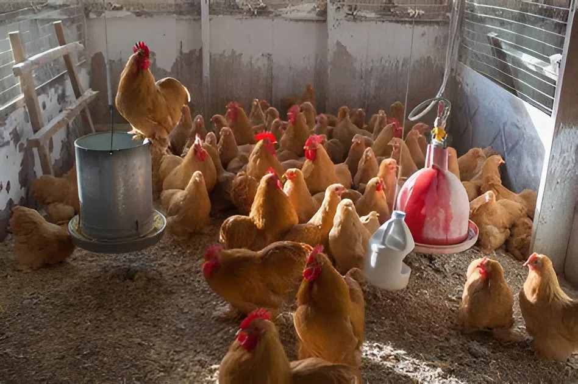

Khóa học: Chăn nuôi gà an toàn sinh học

Trang bị kiến thức và kỹ năng thực hành chăn nuôi gà theo hướng an toàn sinh học, giúp phòng chống dịch bệnh hiệu quả, nâng cao chất lượng sản phẩm và tối đa hóa lợi nhuận.
Nội dung khóa học
Hướng dẫn thiết kế chuồng trại đúng kỹ thuật, đảm bảo thông thoáng, dễ vệ sinh và phù hợp với từng quy mô chăn nuôi.
- Bài 1.1: Lựa chọn địa điểm và hướng chuồng.
- Bài 1.2: Vật liệu và kết cấu chuồng trại.
- Bài 1.3: Hệ thống rèm che, thông gió.
Kỹ thuật chọn giống gà khỏe mạnh, phù hợp với mục đích chăn nuôi (lấy thịt, lấy trứng). Quy trình úm gà con đúng cách để giảm tỷ lệ hao hụt.
- Bài 2.1: Các giống gà phổ biến tại Việt Nam.
- Bài 2.2: Chuẩn bị quây úm và dụng cụ.
- Bài 2.3: Chăm sóc gà con trong giai đoạn úm.
Nhu cầu dinh dưỡng của gà theo từng giai đoạn. Cách phối trộn thức ăn và sử dụng các loại thức ăn bổ sung để tăng sức đề kháng.
- Bài 3.1: Nhu cầu năng lượng, protein, vitamin.
- Bài 3.2: Tự phối trộn thức ăn từ nguyên liệu địa phương.
- Bài 3.3: Quản lý nước uống và máng ăn.
Xây dựng lịch vắc-xin phòng bệnh. Các biện pháp vệ sinh, sát trùng chuồng trại và khu vực chăn nuôi để ngăn chặn mầm bệnh từ bên ngoài.
- Bài 4.1: Các bệnh thường gặp trên gà và cách phòng trị.
- Bài 4.2: Lịch vắc-xin cho gà thịt và gà đẻ.
- Bài 4.3: Thực hành quy trình "cùng vào, cùng ra".